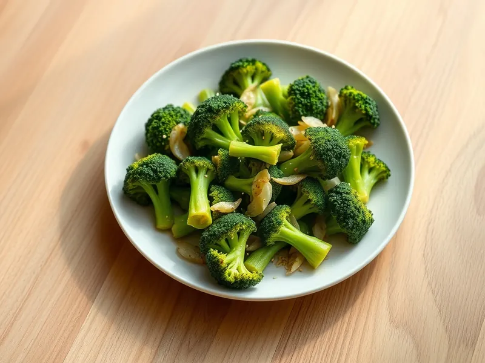

Брокколи с чесноком на сковороде
Ярко-зелёная брокколи, обжаренная с чесноком и сбрызнутая лимонным соком
15 мин4 порц.132 ккал на порциюБ 4 · Ж 9 · У 10Интернациональная кухня
Открыть в приложении: порции, таймеры, список покупок
Продукты на 4 порц.
- Брокколи1 шт
- Чеснок3 зуб.
- Оливковое масло2 ст. л.
- Вода50 мл
- Лимон0,5 шт
- Кунжут2 ч. л.
- Соль2 щеп.
- Острый перец молотый по желанию1 щеп.
Как готовить
- Разберите брокколи на соцветия, крупные разрежьте пополам. Чеснок нарежьте тонкими пластинками.
- Разогрейте масло в широкой сковороде на сильном огне и выложите брокколи. Жарьте 3-4 минуты, не перемешивая, пока края не подрумянятся.
- Влейте воду, накройте крышкой и тушите на среднем огне 3 минуты, пока брокколи не станет ярко-зелёной и нож будет входить в ножку с лёгким хрустом.
- Снимите крышку, добавьте чеснок, соль и по желанию острый перец, жарьте 1 минуту до аромата.
- Сбрызните лимонным соком и посыпьте кунжутом.
Совет. Чеснок кладите в самом конце: подгорев, он даёт горечь.